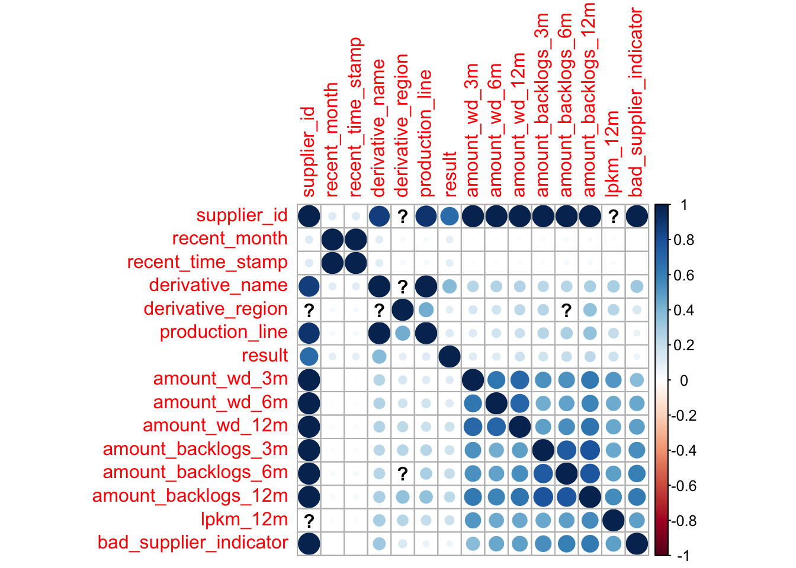
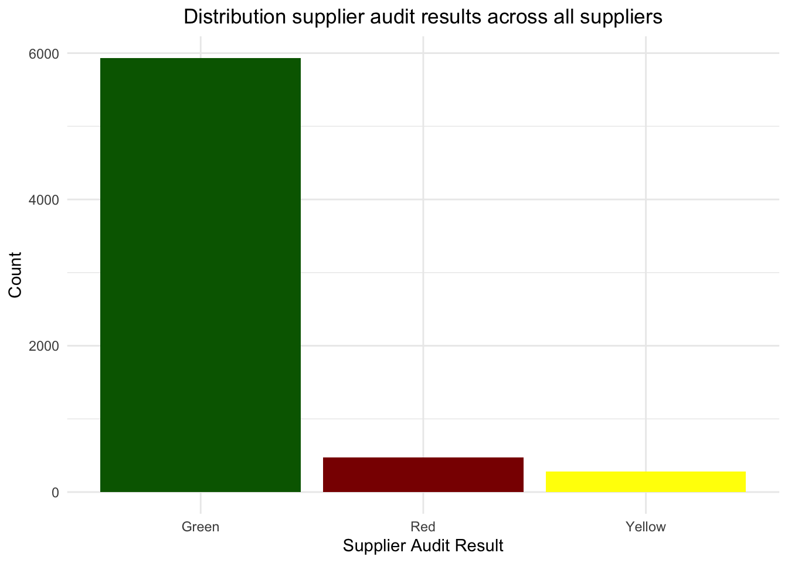
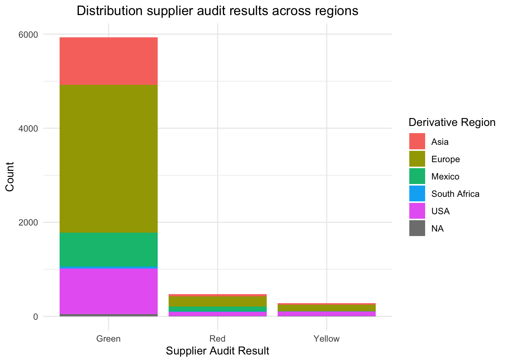
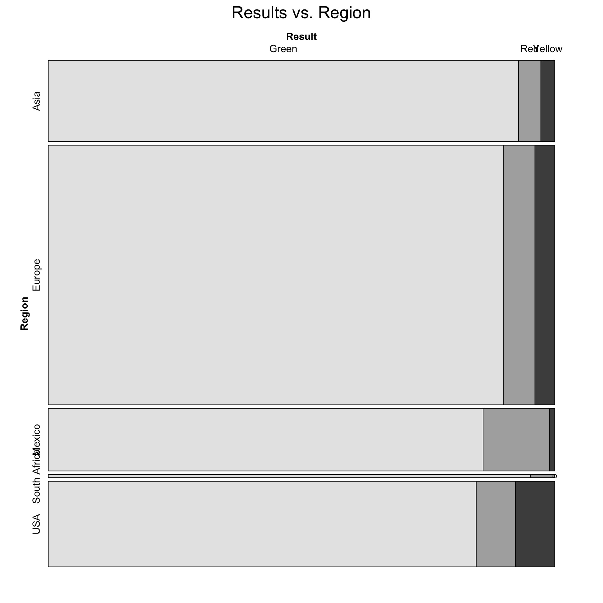
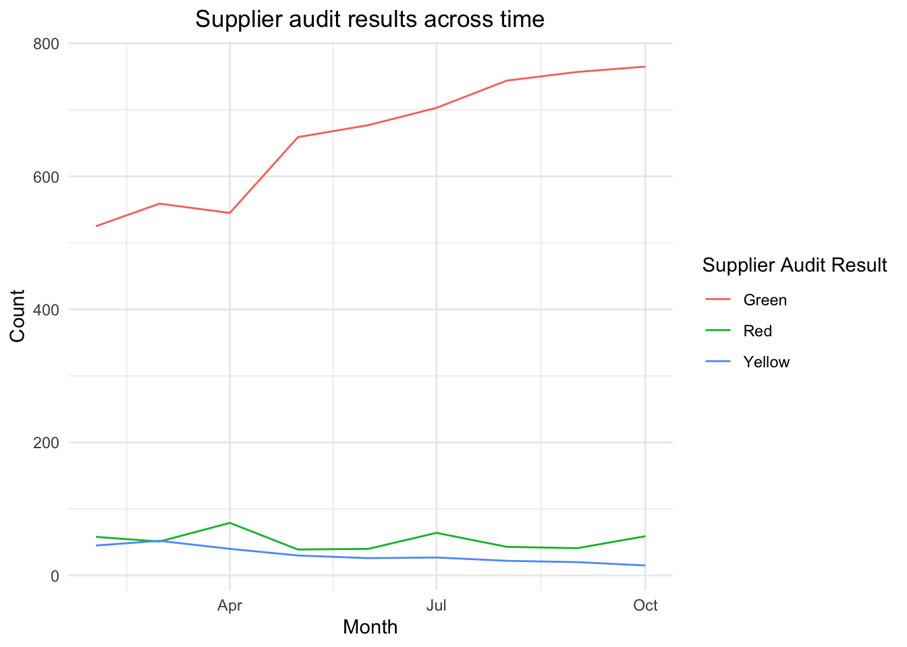
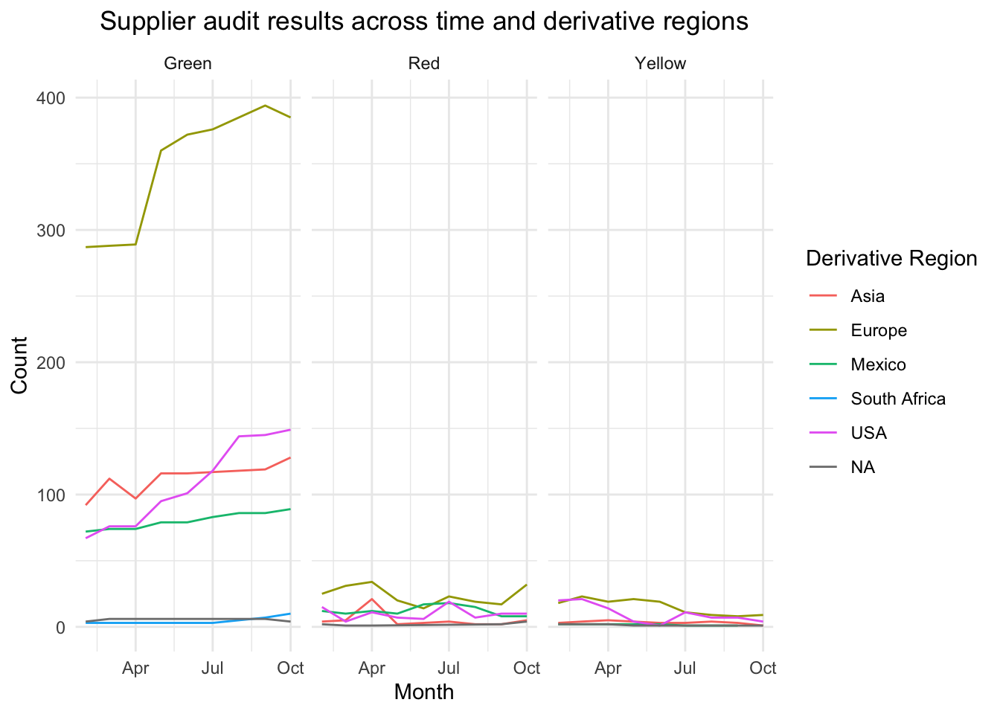
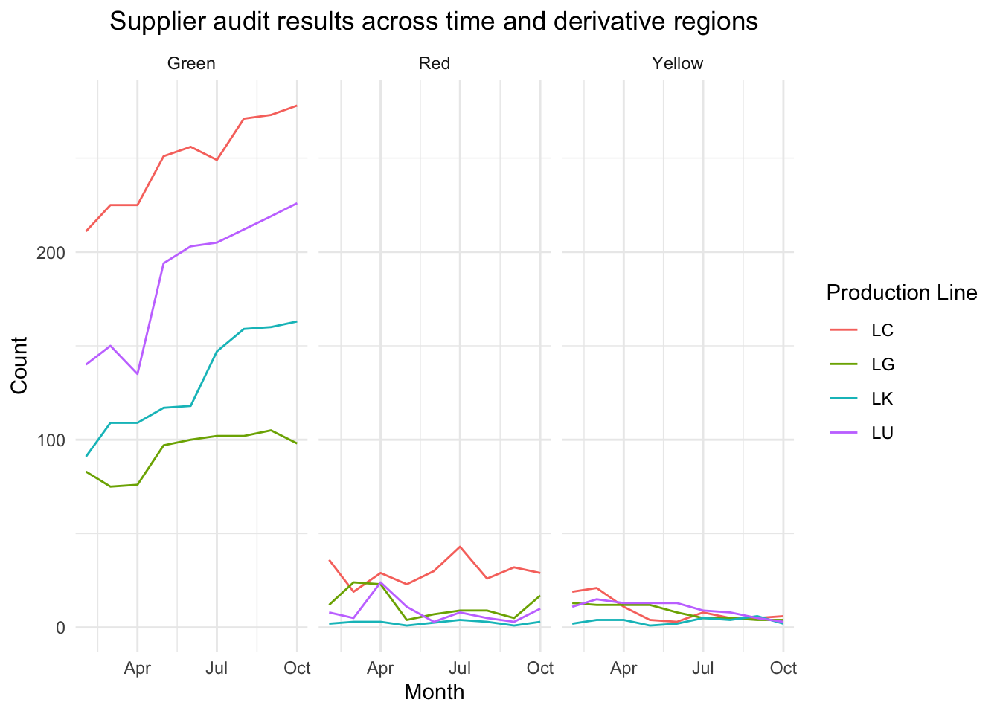
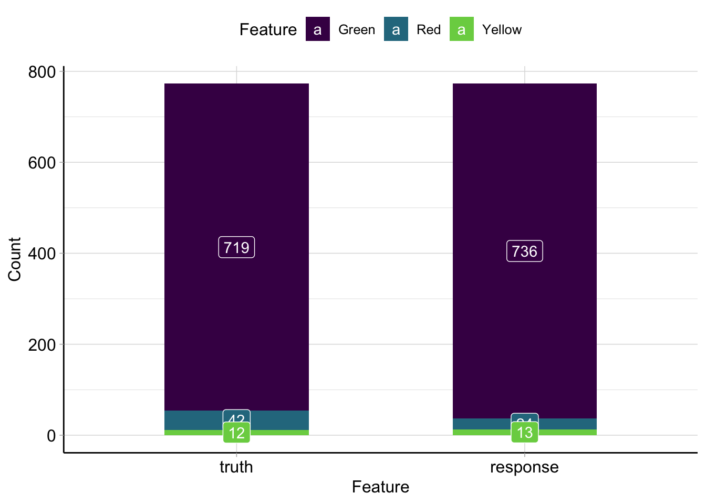
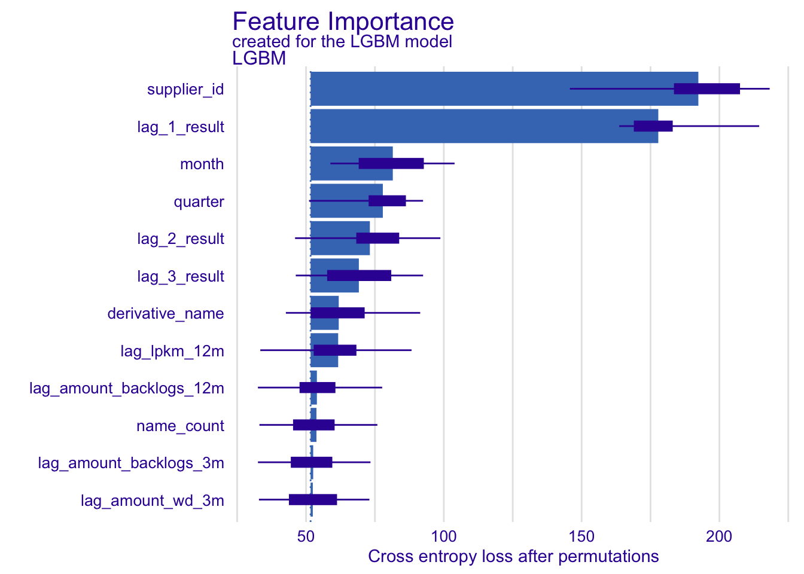
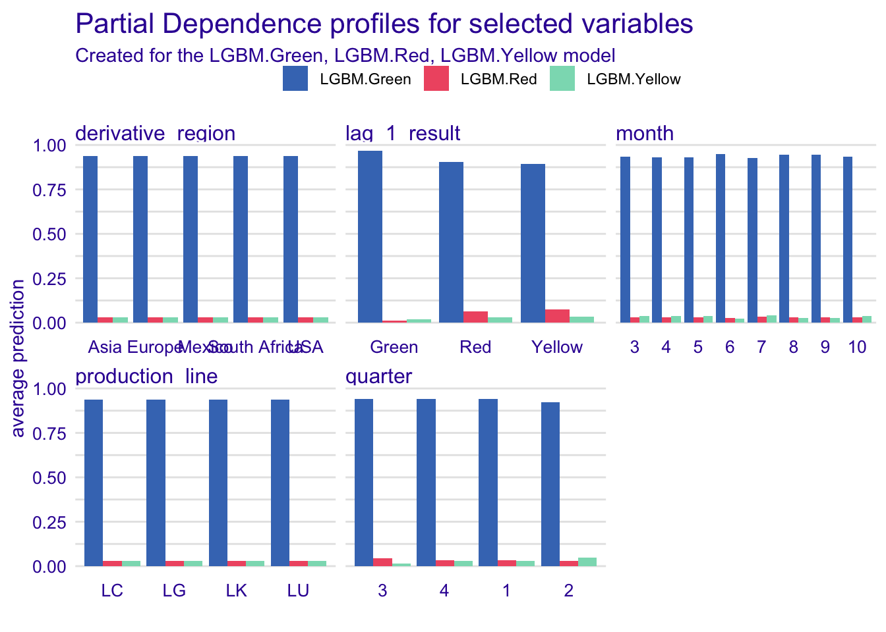

Data Science Case Study: Supplier Audit Results Prediction
Data
Code
summary(supplier) %>%
knitr::kable()| supplier_id | recent_month | recent_time_stamp | derivative_name | derivative_region | production_line | t1color | t2color | t3color | result | amount_wd_3m | amount_wd_6m | amount_wd_12m | amount_backlogs_3m | amount_backlogs_6m | amount_backlogs_12m | lpkm_12m | bad_supplier_indicator | |
|---|---|---|---|---|---|---|---|---|---|---|---|---|---|---|---|---|---|---|
| 2fa1792a27c855b5d8a5efa8b12a6ac2: 36 | Min. :2022-02-01 | Min. :2022-02-28 11:01:17.00 | 9c491ff90cbfc2882aa1116944658240: 734 | Asia :1093 | LC:2588 | Green :6487 | Green :5030 | Green :3894 | Green :5934 | Min. : 0.0000 | Min. : 0.000 | Min. : 0.000 | Min. : 0.000 | Min. : 0.000 | Min. : 0.00 | Min. :1.00 | Min. :0.0000 | |
| 4600f0a901054216cf0eecf2999f7eb2: 36 | 1st Qu.:2022-04-01 | 1st Qu.:2022-04-02 11:01:16.00 | 3724c242924ad7b7871634355d6ee63e: 707 | Europe :3488 | LG:1023 | Red : 137 | Red : 230 | Red : 215 | Red : 474 | 1st Qu.: 0.0000 | 1st Qu.: 0.000 | 1st Qu.: 0.000 | 1st Qu.: 0.000 | 1st Qu.: 0.000 | 1st Qu.: 0.00 | 1st Qu.:3.70 | 1st Qu.:0.0000 | |
| adc20ee91fab834d70c263f1e8e10c76: 35 | Median :2022-06-01 | Median :2022-06-30 10:01:20.00 | b4175fbc370abaa3d5b664db6e66c3c4: 703 | Mexico : 841 | LK:1223 | Yellow: 61 | Yellow: 155 | Yellow: 106 | Yellow: 277 | Median : 0.0000 | Median : 0.000 | Median : 0.000 | Median : 0.000 | Median : 1.000 | Median : 3.00 | Median :4.30 | Median :0.0000 | |
| d3874eab969bc09743f32c351e749692: 33 | Mean :2022-06-08 | Mean :2022-07-05 11:37:48.97 | 66a13ab8002c70a1facbcff8ebce7797: 558 | South Africa: 42 | LU:1851 | NA | NA’s :1270 | NA’s :2470 | NA | Mean : 0.7041 | Mean : 1.721 | Mean : 3.284 | Mean : 5.552 | Mean : 9.611 | Mean : 16.93 | Mean :4.19 | Mean :0.1648 | |
| b4ee6193767179762188c10fd04a2489: 32 | 3rd Qu.:2022-08-01 | 3rd Qu.:2022-08-31 11:01:15.00 | 2dc5fe1b4f8895bb1096f6470b7d8550: 404 | USA :1149 | NA | NA | NA | NA | NA | 3rd Qu.: 0.0000 | 3rd Qu.: 2.000 | 3rd Qu.: 3.000 | 3rd Qu.: 5.000 | 3rd Qu.: 9.000 | 3rd Qu.: 17.00 | 3rd Qu.:4.80 | 3rd Qu.:0.0000 | |
| 14d1786fb3f37270f97b58141c1510a9: 29 | Max. :2022-10-01 | Max. :2022-10-31 11:01:25.00 | beef89b289437d6b19a0fc2e998a4dc0: 395 | NA’s : 72 | NA | NA | NA | NA | NA | Max. :14.0000 | Max. :37.000 | Max. :76.000 | Max. :176.000 | Max. :243.000 | Max. :385.00 | Max. :5.00 | Max. :1.0000 | |
| (Other) :6484 | NA | NA | (Other) :3184 | NA | NA | NA | NA | NA | NA | NA | NA | NA | NA | NA | NA | NA’s :40 | NA |
Issues
Code
vapply(supplier, function(x) sum(is.na(x)), numeric(1)) %>%
tibble::enframe(name = "column", value = "missing")t1color,t2color,t3colorcols are being dropped i.e. missing has no effectderivative_regionmissing for three distinct suppliers, i.e. cannot recreate -> not dropping and using NAs as extra region class
Date range
Code
date_max <- max(supplier$recent_month)
date_min <- min(supplier$recent_month)
missing_date_range <- supplier %>%
group_by(supplier_id) %>%
summarise(date_min = min(recent_month), date_max = max(recent_month)) %>%
filter(date_min != !!date_min | date_max != !!date_max)
missing_date_rangeThere are 149 of 6685 observations not in the date range of 2022-02-01 and 2022-10-01. Needs to be consider for models that require same panel size.
Missing data
Missing region
Code
supplier %>%
group_by(recent_month, supplier_id) %>%
filter(is.na(derivative_region)) %>%
ungroup() %>%
select(derivative_name) %>%
distinct()Missing lpkm_12m
Code
missing_lpkm <- supplier %>%
filter(is.na(lpkm_12m)) %>%
select(supplier_id) %>%
distinct()
print(missing_lpkm)# A tibble: 6 × 1
supplier_id
<fct>
1 c9a55a86568911b9ec60b311798dcc0e
2 0a96f5978c7ece454e745a77aca3e8a1
3 9a4ddf98ab8c860328edb8f0d357fb1a
4 b030173540ba1861a95f02434ef1c774
5 28529cf24b00b98b23a9af442a8bf0c2
6 f00315ed49f48f2de85ba037d8bb1352Code
all_lpkm_missing <- vapply(pull(missing_lpkm), function(x) {
supplier %>%
filter(supplier_id == !!x) %>%
pull(lpkm_12m) %>%
is.na() %>%
all()
}, logical(1)) %>%
all()- 6 suppliers have missing
lpkm_12mvalues. - Every supplier that has missing
lpkm_12mvalues, has all of them missing. - Imputing with rolling mean.
Assocation Matrix with Cramer’s V score
Code
supplier_sub <- supplier %>% select(-c(t1color, t2color, t3color))
corrplot::corrplot(DescTools::PairApply(supplier_sub, DescTools::CramerV))
Result variable
Code
result_summary <- summary(supplier$result)
green_perc <- result_summary["Green"] / sum(result_summary)
supplier %>%
ggplot(aes(result)) +
geom_histogram(stat = "count", fill = c("darkgreen", "darkred", "yellow")) +
theme_minimal() +
theme(plot.title = element_text(hjust = 0.5)) +
labs(
title = "Distribution supplier audit results across all suppliers",
x = "Supplier Audit Result",
y = "Count"
)
Target variable is highly imbalanced with 0.8876589% being green, i.e. indicates that the suppliers are qualified in the current audit process with a much higher degree.
Supplier derivative relationship
Derivatives with missing derivative region
Code
supplier %>%
filter(is.na(derivative_region)) %>%
select(derivative_name) %>%
distinct()Result vs. derivative region
Code
ggplot(supplier) +
geom_bar(aes(x = result, fill = derivative_region)) +
theme_minimal() +
theme(plot.title = element_text(hjust = 0.5)) +
labs(
title = "Distribution supplier audit results across regions",
x = "Supplier Audit Result",
y = "Count",
fill = "Derivative Region"
)
Code
vcd::mosaic(
result ~ derivative_region,
data = supplier,
main = "Results vs. Region",
labeling_args = list(
set_varnames = c(result = "Result", derivative_region = "Region")
)
)
Seasonal effects
Code
supplier %>%
group_by(recent_month, result) %>%
tally() %>%
ggplot() +
geom_line(aes(y = n, x = recent_month, color = result)) +
theme_minimal() +
theme(plot.title = element_text(hjust = 0.5)) +
labs(
title = "Supplier audit results across time",
x = "Month",
y = "Count",
color = "Supplier Audit Result"
)
Code
supplier %>%
group_by(recent_month, derivative_region, result) %>%
tally() %>%
ggplot() +
geom_line(aes(y = n, x = recent_month, color = derivative_region)) +
facet_wrap(~ result) +
theme_minimal() +
theme(plot.title = element_text(hjust = 0.5)) +
labs(
title = "Supplier audit results across time and derivative regions",
x = "Month",
y = "Count",
color = "Derivative Region"
)
Code
supplier %>%
group_by(recent_month, production_line, result) %>%
tally() %>%
ggplot() +
geom_line(aes(y = n, x = recent_month, color = production_line)) +
facet_wrap(~ result) +
theme_minimal() +
theme(plot.title = element_text(hjust = 0.5)) +
labs(
title = "Supplier audit results across time and derivative regions",
x = "Month",
y = "Count",
color = "Production Line"
)
Prediction Model
Code
add_date_feat <- function(df) {
# year has no information gain since data is strictly 2022
df %>%
mutate(
month = as.factor(lubridate::month(recent_month)),
quarter = as.factor(lubridate::quarter(recent_month))
)
}
add_interaction <- function(df) {
df %>%
mutate(
region_production = as.factor(paste0(derivative_region, production_line))
)
}
add_count <- function(df) {
region_count <- df %>%
select(supplier_id, derivative_region) %>%
distinct() %>%
group_by(supplier_id) %>%
count() %>%
rename(region_count = n)
name_count <- df %>%
select(supplier_id, derivative_name) %>%
distinct() %>%
group_by(supplier_id) %>%
count() %>%
rename(name_count = n)
production_count <- df %>%
select(supplier_id, production_line) %>%
distinct() %>%
group_by(supplier_id) %>%
count() %>%
rename(production_count = n)
df %>%
inner_join(region_count, by = "supplier_id") %>%
inner_join(name_count, by = "supplier_id") %>%
inner_join(production_count, by = "supplier_id")
}
apply_lags <- function(df, lag = 1) {
# only one derivative_region and production_line per derivative_name
cols <- c(
"amount_wd_3m", "amount_wd_6m", "amount_wd_12m",
"amount_backlogs_3m", "amount_backlogs_6m", "amount_backlogs_12m",
"lpkm_12m", "bad_supplier_indicator"
)
df %>%
group_by(supplier_id, derivative_name) %>%
mutate(
across(all_of(cols), ~ lag(.x, n = lag, order_by = recent_month), .names = "lag_{.col}"),
lag_1_result = lag(result, n = 1, order_by = recent_month),
lag_2_result = lag(result, n = 2, order_by = recent_month),
lag_3_result = lag(result, n = 3, order_by = recent_month),
) %>%
ungroup() %>%
select(!all_of(cols)) %>%
tidyr::drop_na()
}
drop_cols <- function(df) {
df %>%
select(-c(t1color, t2color, t3color, recent_time_stamp))
}
remove_missing_date <- function(df) {
date_max <- max(df$recent_month)
missing <- df %>%
group_by(supplier_id) %>%
summarise(date_max = max(recent_month)) %>%
filter(date_max != !!date_max)
df %>%
anti_join(missing, by = "supplier_id")
}
impute_missing <- function(df) {
df %>%
group_by(recent_month) %>%
mutate(lpkm_12m = ifelse(!is.na(lpkm_12m), lpkm_12m, mean(lpkm_12m))) %>%
ungroup()
}
add_static_reals <- function(df) {
df %>%
group_by(derivative_region) %>%
mutate(avg_region_rating = mean(lpkm_12m, na.rm = TRUE)) %>%
ungroup()
}Code
supplier <- import_data("../Data/") %>%
clean_cols() %>%
impute_missing() %>%
remove_missing_date() %>%
drop_cols() %>%
add_date_feat() %>%
add_interaction() %>%
add_count() %>%
apply_lags() %>%
ungroup()
train_data <- supplier %>%
filter(recent_month < "2022-10-01") %>%
select(-recent_month)
test_data <- supplier %>%
filter(recent_month >= "2022-10-01") %>%
select(-recent_month)Code
library(mlr3)
library(mlr3extralearners)
task_train <- as_task_classif(train_data, target = "result", id = "supplier_id")
task_test <- as_task_classif(test_data, target = "result", id = "supplier_id")
task <- as_task_classif(select(supplier, -recent_month), target = "result", id = "supplier_id")
learner <- lrn("classif.lightgbm")
learner$train(task_train)
prediction <- learner$predict(task_test)Feature importance
Code
learner$importance() %>%
tibble::enframe(name = "feature", value = "importance")Evaluation: Out-of-sample for most recent month on supplier, derivative level
Code
prediction$confusion %>%
knitr::kable(caption = "Confusion Matrix")| Green | Red | Yellow | |
|---|---|---|---|
| Green | 707 | 23 | 6 |
| Red | 7 | 16 | 1 |
| Yellow | 5 | 3 | 5 |
Code
measures <- msrs(c("classif.acc", "classif.ce", "classif.logloss"))
prediction$score(measures) %>%
tibble::enframe(name = "Metric", value = "Value") %>%
mutate(Value = sprintf("%.2f%%", Value * 100))Code
library(mlr3viz)
autoplot(prediction)
Model explaination with DALEX
Code
library("DALEX")
library("DALEXtra")
lgbm_exp <- explain_mlr3(learner,
data = supplier %>% select(-recent_month),
y = as.integer(supplier$result),
label = "LGBM",
colorize = TRUE
)Preparation of a new explainer is initiated
-> model label : LGBM
-> data : 4143 rows 22 cols
-> data : tibble converted into a data.frame
-> target variable : 4143 values
-> predict function : yhat.LearnerClassif will be used ( [33m default [39m )
-> predicted values : No value for predict function target column. ( [33m default [39m )
-> model_info : package mlr3 , ver. 0.14.1 , task multiclass ( [33m default [39m )
-> model_info : Model info detected multiclass task but 'y' is a integer . ( [31m WARNING [39m )
-> model_info : By deafult multiclass tasks supports only factor 'y' parameter.
-> model_info : Consider changing to a factor vector with true class names.
-> model_info : Otherwise I will not be able to calculate residuals or loss function.
-> predicted values : predict function returns multiple columns: 3 ( [33m default [39m )
-> residual function : difference between 1 and probability of true class ( [33m default [39m )
-> residuals : the residual_function returns an error when executed ( [31m WARNING [39m )
[32m A new explainer has been created! [39m Code
supplier_vi <- model_parts(lgbm_exp)
head(supplier_vi)Code
plot(supplier_vi, max_vars = 12, show_boxplots = TRUE)
Code
selected_variables <- c(
"lag_1_result", "month", "quarter", "derivative_region", "production_line"
)
supplier_pd <- model_profile(lgbm_exp, variables = selected_variables)$agr_profiles
plot(supplier_pd) +
ggtitle("Partial Dependence profiles for selected variables")